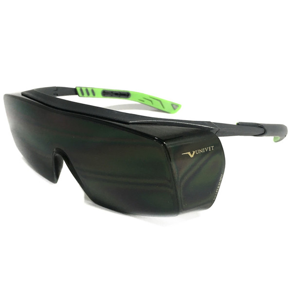
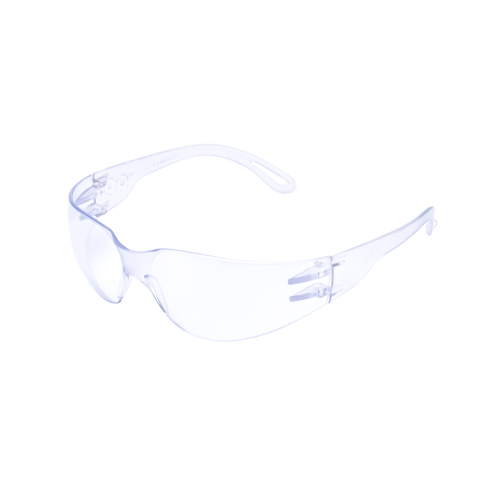
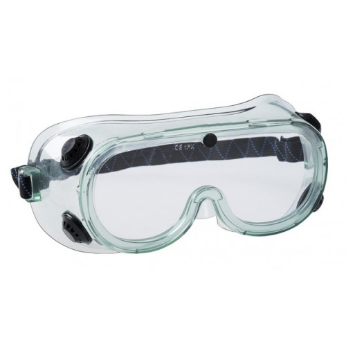

Aula-2: Óculos de Proteção
Proteja seus olhos com o EPI certo
Introdução aos Óculos de Proteção
Os óculos de proteção são um EPI essencial para proteger os olhos contra partículas, poeira, respingos químicos, radiação UV e impactos em obras, laboratórios e indústrias.
De acordo com a Lei n.º 23/2007 (Lei do Trabalho) e o Decreto n.º 56/2017 (SST) em Moçambique, todo trabalhador exposto a riscos oculares deve usar óculos certificados com CA válido.
Nesta aula, você vai aprender os principais riscos, tipos de lentes, modelos por risco, ajuste correto e manutenção para garantir proteção total.

Tipos de Óculos de Proteção por Risco

Radiação UV/IR
Lentes que bloqueiam luz excessiva de solda e maçarico
Metalurgia
Siderurgia
Construção Naval

Contra Impactos
Protege contra poeira, cimento e resíduos
Construção
Marcenaria
Mineração

Risco Biológico
Design vedado contra vírus e bactérias
Hospitais
Laboratórios
Clínicas

Risco Químico
Lentes antiembaçantes e resistentes a ácidos
Química
Farmacêutica
Agricultura